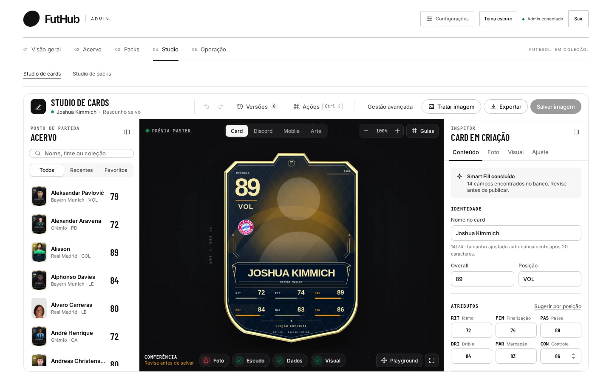
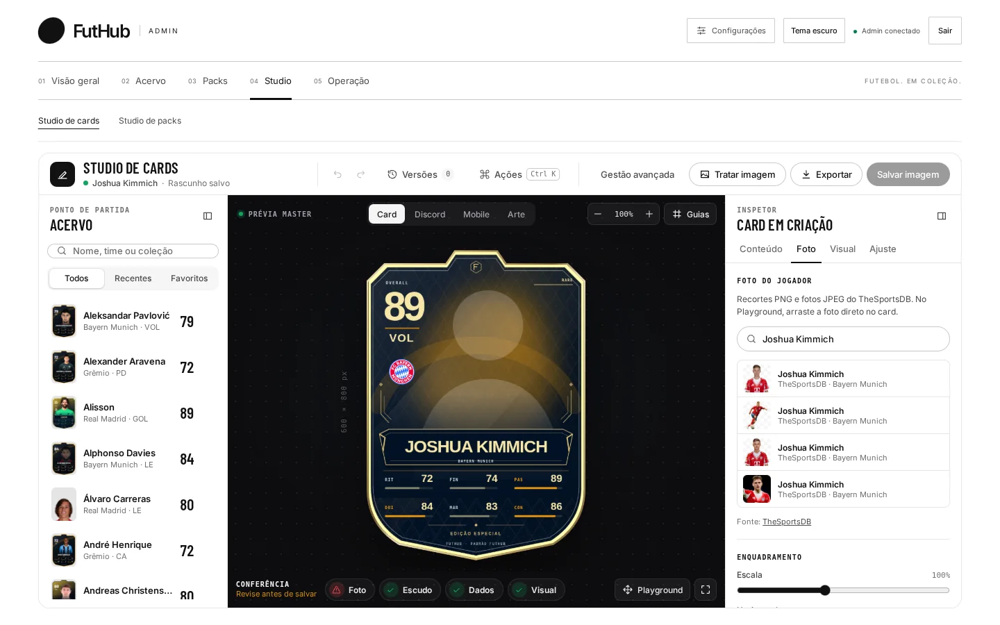
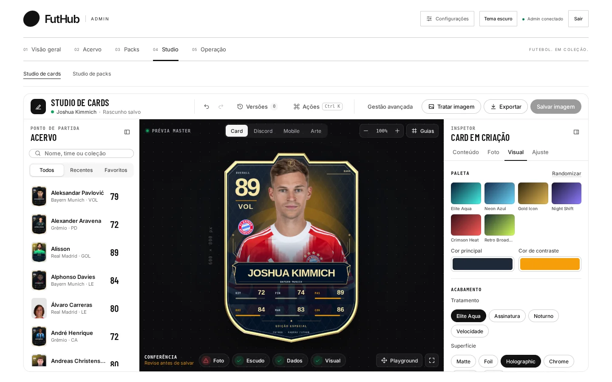
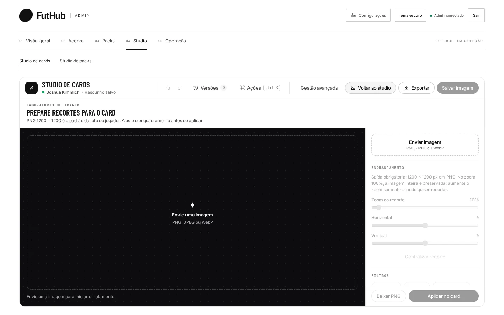
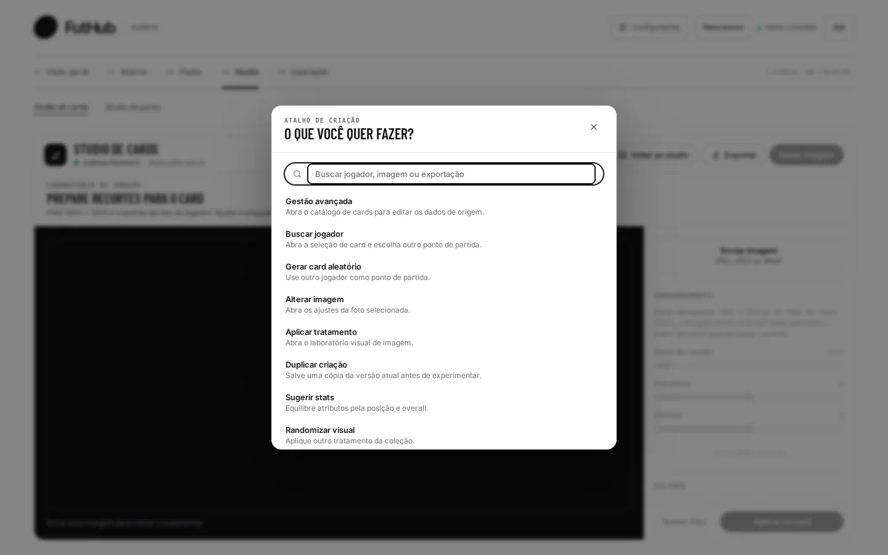

Início / Recursos / Studio de cards
01 · Studio de cards
Do nome do jogador ao card pronto.
A tela tem três colunas: a biblioteca de jogadores à esquerda, o card no centro e o inspetor à direita. O que você muda no inspetor aparece no card na mesma hora, e dá para ver o resultado como card, mensagem no Discord, tela de celular ou arte de divulgação.


O que faz
Você escolhe, o Studio preenche.
Quando você escolhe um jogador na biblioteca, o Smart Fill busca o que já existe no banco (nome, overall, posição, os seis atributos, time e coleção) e avisa quantos campos encontrou. Sobra para você só a parte criativa.
A foto vem do TheSportsDB: busque pelo nome, escolha um dos recortes e ajuste escala e posição. Se precisar de mais, o laboratório de imagem remove o fundo com IA no próprio navegador e aplica filtros prontos.
Por que importa
Um card errado no Discord todo mundo vê.
O card aparece numa mensagem do bot, num celular e em posts de divulgação. Com as prévias você vê esses lugares antes de salvar. A barra de Conferência marca se Foto, Escudo, Dados e Visual estão prontos.
Como funciona
Cinco passos, uma tela.
Escolha o jogador
Busque por nome, time ou coleção, ou filtre por Recentes e Favoritos. O Smart Fill traz do banco os campos que já existem.
- Overall, posição e os seis atributos (RIT, FIN, PAS, DRI, MAR, CON)
- “Sugerir por posição” propõe atributos coerentes com a função

Aplique a foto
A aba Foto busca recortes PNG e fotos do TheSportsDB pelo nome do jogador. Um clique aplica, e o enquadramento se ajusta com escala e posição.
- No Playground, dá para arrastar a foto direto para o card
- A fonte da foto aparece com link

Defina o visual
Escolha entre as paletas prontas, como Elite Aqua, Neon Azul, Gold Icon, Night Shift e Crimson Heat, ou ajuste a cor principal e a de contraste. Depois vêm o tratamento e a superfície.
- Superfícies: Matte, Foil, Holographic e Chrome
- Tratamentos: Elite Aqua, Assinatura, Noturno e Velocidade
- O botão “Randomizar” sorteia uma combinação

Confira onde ele vai aparecer
Quatro prévias: Card, Discord (dentro da mensagem do bot), Mobile (numa tela de celular) e Arte (a peça de divulgação “The game is yours”).

Exporte o kit de imagens
O diálogo de exportação gera as imagens do jogador a partir do mesmo card:
- Item EA FC e item FUTGG, com fundo transparente
- Card simples, imagem social e imagem de compartilhamento
- Recorte do jogador em PNG transparente de 1200 × 1200
- PNG ou WebP, em 600 × 800, 1200 × 1600 ou largura personalizada

Ferramentas
Também no Studio.


Dicas
Para quem usa todo dia.
Ctrl K abre as ações
Troque de jogador, gere um card aleatório ou aplique um tratamento sem tirar a mão do teclado.
Versões antes de arriscar
O menu “Versões” guarda até 8 snapshots do card. Experimente outra paleta e volte se não gostar. Desfazer e refazer também funcionam.
Modo criação
Recolha a biblioteca e o inspetor para trabalhar só com o card na tela, sem distrações.
Camadas clicáveis
Clique na foto, no overall, no nome ou nos stats do card para ir direto ao ajuste daquela camada.
Comece pelo acervo
No Banco de jogadores, “Abrir no Studio” já carrega o card escolhido com tudo preenchido.
Salvar imagem
Quando a Conferência estiver toda marcada, “Salvar imagem” grava a arte no card e o bot passa a usá-la.